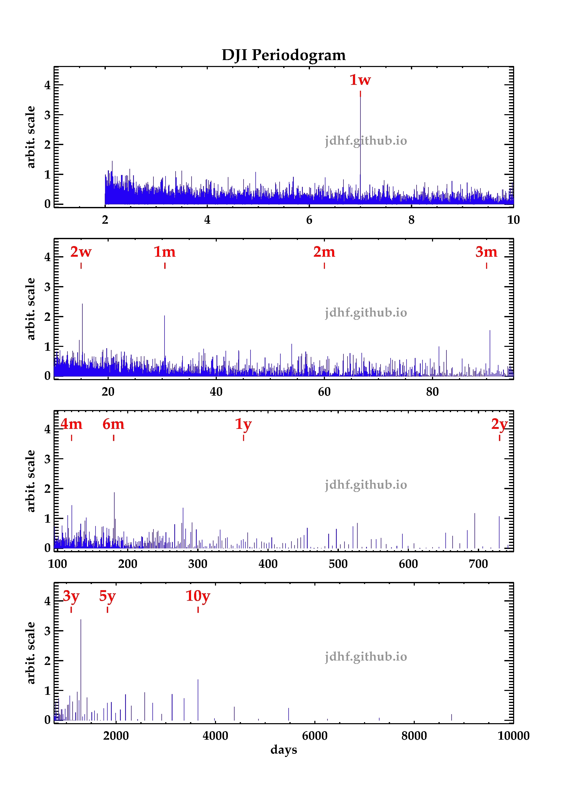

Periodicities in the DJI?

Synthetic periodogram of the Dow Jones Industrial Average (DJI) from 1896 to 2016. Significant natural periods of time (w=week, m=month, y=year) are marked in red simbols. Vertical axis is in arbitrary scale while horizontal axis corresponds to the period of time in days. For more details, contact me.